El Club Atlético River Plate es una entidad polideportiva con sede en Argentina. Fue fundado el 25 de mayo de 1901 en el barrio de La Boca, tras la fusión de los clubes Santa Rosa y La Rosales, y su nombre proviene de la antigua denominación que se le daba en el inglés británico al Río de la Plata. Su principal actividad es el fútbol masculino profesional, el cual participa en la Liga Profesional de Fútbol. Es uno de los clubes más exitosos del mundo con un total de 69 títulos en su palmarés.
También es el segundo club más ganador de copas nacionales con 14 títulos. Es el segundo club más ganador de la Copa Argentina con 3 títulos y el más ganador de la Supercopa Argentina con 2 trofeos. Ostenta el récord de ser el club más ganador del fútbol argentino desde su profesionalización en 1931 sumando 66 títulos oficiales. calificando como el mejor equipo argentino y tercero a nivel continental.
En el nuevo ranking organizado por la misma institución donde se establece el mejor club del siglo xxi por décadas, se ubica primero entre los clubes argentinos en la segunda década, que establece puntajes desde 2011 a 2020. A lo largo de su historia consiguió importantes récords a nivel nacional, donde destaca ser el líder de la tabla histórica de Primera División, además de ser el que más partidos ganó, el que menos perdió, el que más goles marcó y el que menos recibió, y es también el que más temporadas disputó en la máxima categoría del fútbol argentino. Además, es el equipo que más veces ha conseguido un tricampeonato de liga, en cuatro oportunidades y el primer y único club en ser bicampeón de la Copa Argentina. En la máxima competición continental disputó un total de siete finales y se posiciona primero en la tabla histórica de la competición, siendo también el club argentino que más veces jugó el certamen con 37 participaciones.
Desde el 14 de diciembre de 1986, forma parte del selecto grupo de los únicos 30 clubes en el mundo que han ganado el máximo campeonato de clubes de fútbol a nivel mundial, al haber conquistado la Copa Intercontinental derrotando al Steaua de Bucarest por 1-0, con gol de Antonio Alzamendi, en el histórico estadio Nacional de Tokio, frente a 62.000 espectadores. Debido a esa importante gesta es uno de los únicos 6 equipos argentinos que han podido consagrarse como campeones mundiales de clubes. Mantiene rivalidades con distintos clubes del país. Otra de las rivalidades tradicionales en con Racing Club, con el cual protagoniza el denominado "clásico más antiguo" del fútbol argentino.
jugadores titulares
| foto | nombre y apellido | dorsal | posicion |
|---|---|---|---|
| 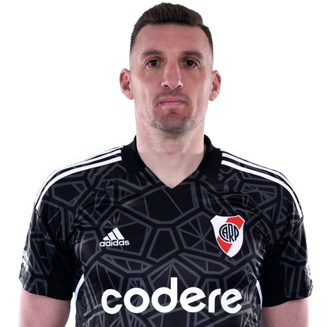 | Armani, Franco | 1 | arquero |
| 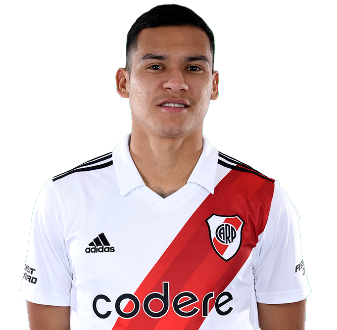 | Herrera, Marcelo | 15 | lateral |
| 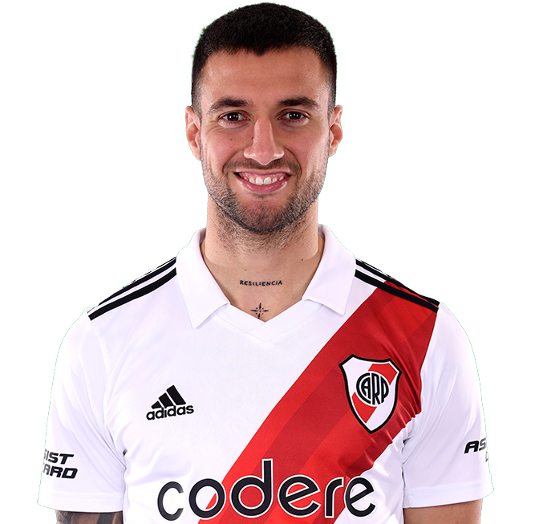 | Mammana, Emanuel | 23 | central |
| 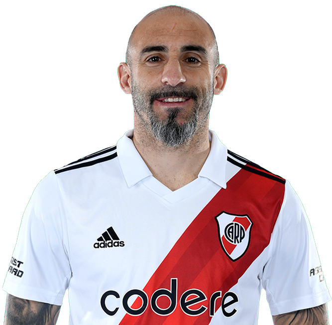 | Pinola, Javier | 22 | central |
| 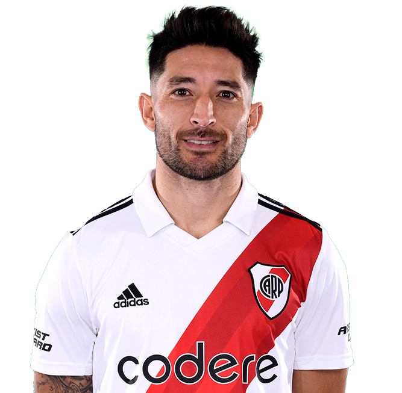 | Casco, Milton | 20 | lateral |
| 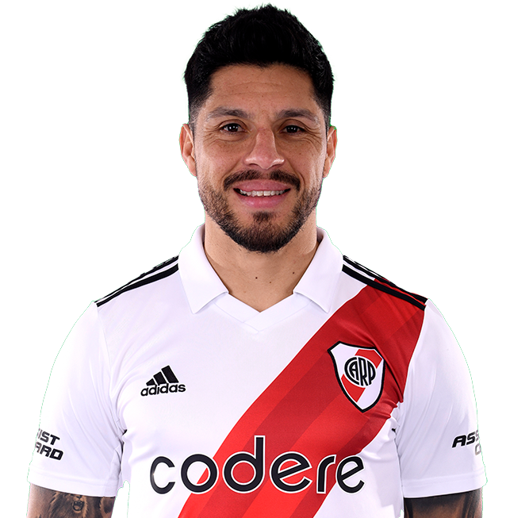 | Pérez, Enzo | 24 | volante |
| 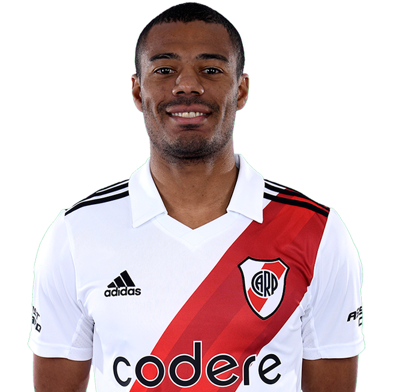 | De la Cruz, Nicolás | 11 | volante |
| 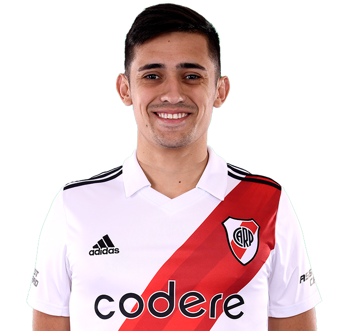 | Solari, Pablo | 16 | delantero |
| 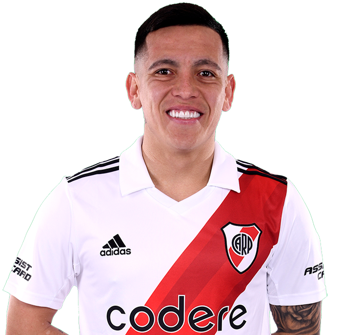 | Barco, Esequiel | 21 | delantero |
| 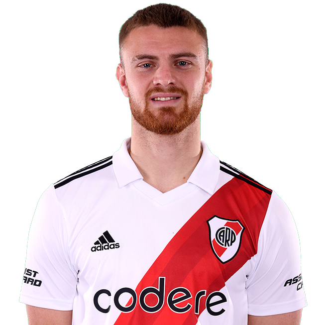 | Beltrán, Lucas | 18 | punta |
| 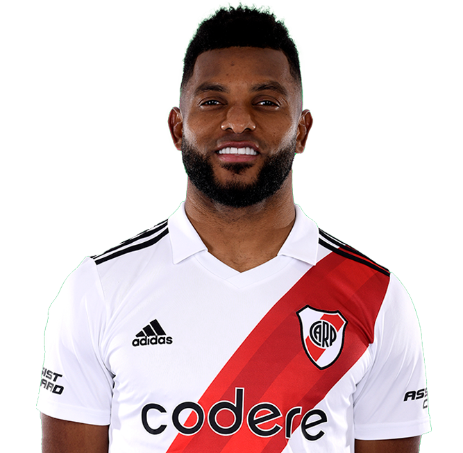 | Borja, Miguel | 9 | punta |